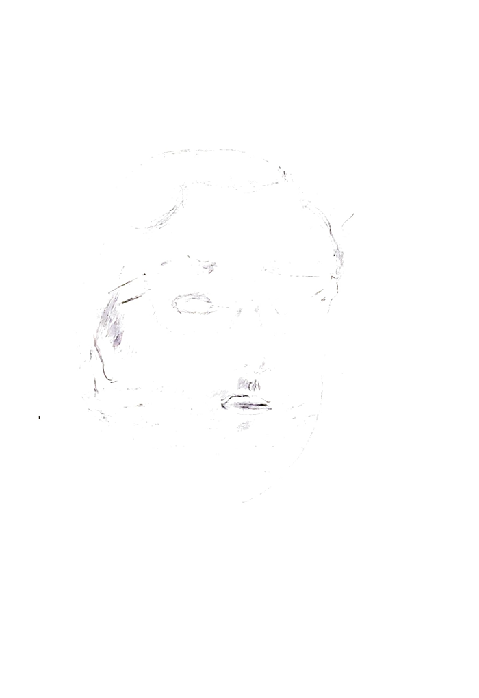
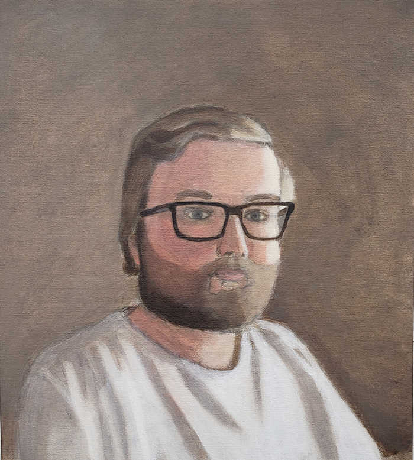
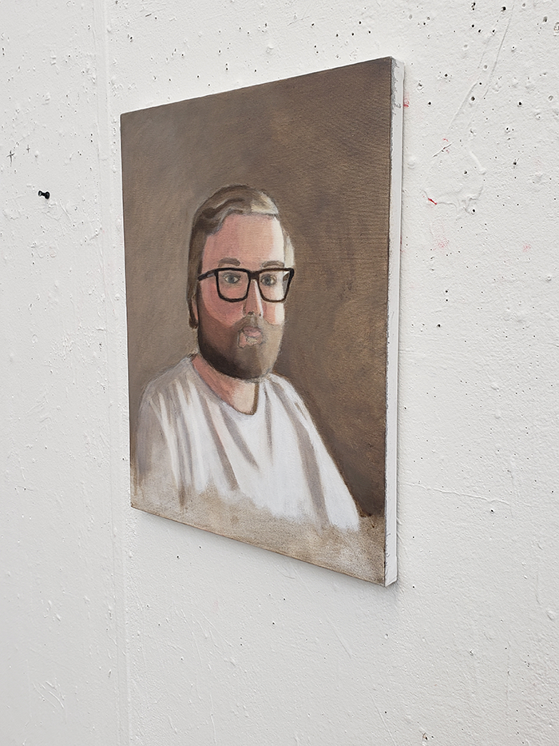

Presented here is a self portrait I created in the spring
of 2022. I've made a few paintings over the years, so
including one in my portfolio felt natural.
The Ideation
Attempting a three-quarter view was a new experience for myself, as I had never painted a person from this view beforehand. This was the only sketch I made for this painting.
The Finish Line
 The final painting has a toned, sepia feel to it. This was influenced
by the color palette of the original photograph as well as the official
White House portrait of John F. Kennedy.